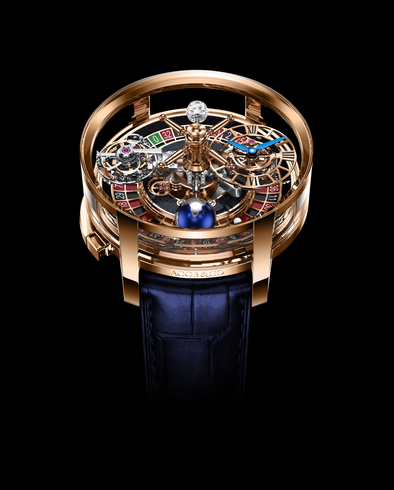
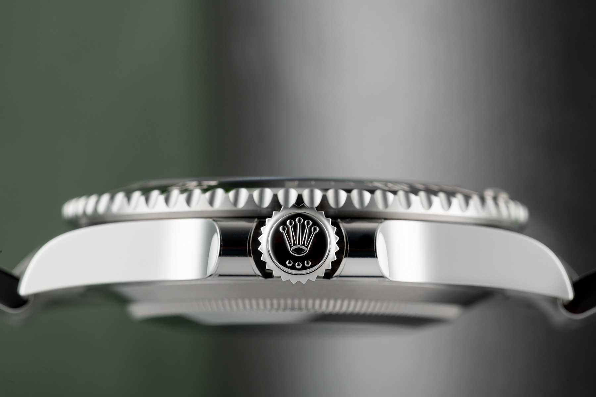
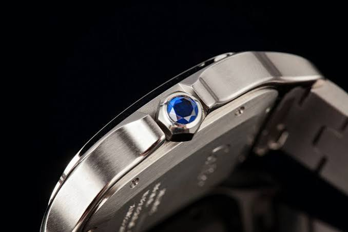
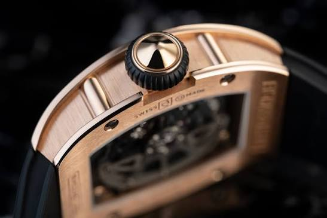
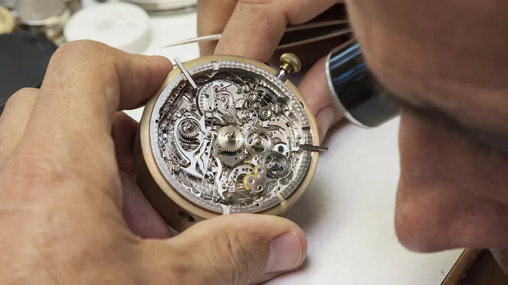
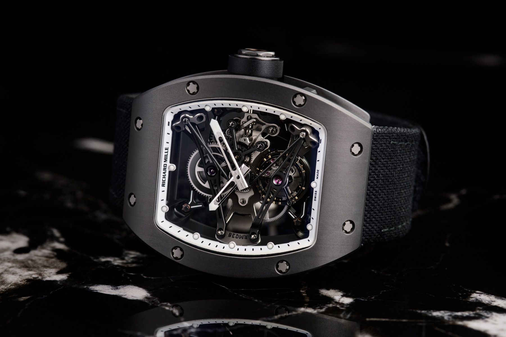

Five watches from Geneva. Each regulated by hand.
Aurum has built mechanical watches at 12 Rue du Rhône since 1998. Five references, from a 38mm dress watch in rose gold to a carbon tonneau.
View the collectionOne rule since 1998
Nothing goes on the case that doesn't earn its place.
That is the whole brief. It is why the Regent has no date window, why the Meridian's bezel turns one way only, and why the Calibre has changed twice since 1998.
Every movement is regulated to within two seconds a day before it leaves the workshop. We treat that tolerance as the floor, not the achievement.



One watchmaker,
one watch.

Two seconds a day
Each movement spends three weeks on the regulating bench, tested in six positions and at two temperatures. If it drifts more than two seconds a day, it goes back.
First part to final seal
A Calibre is assembled by one watchmaker from start to finish. Their initials are engraved under the rotor, where only the next watchmaker to service it will read them.

See them in Geneva
Private viewings at 12 Rue du Rhône, by appointment, with a watchmaker at the table.
Open Monday to Friday 10:00 to 18:30, Saturday 10:00 to 17:00.
Book a private viewing